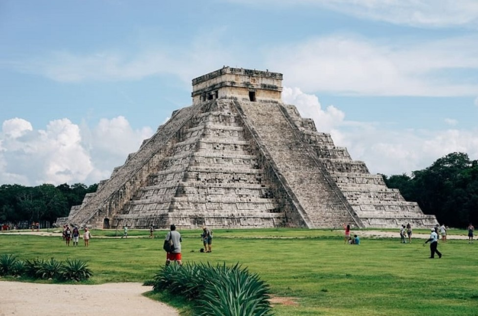

-

MÉXICO EN EL RECUERDO ADYD
"Mi Proyecto EDAYO 28.05.2025"
La historia del Palacio de Bellas Artes, la máxima casa de las artes en México, es rica y compleja. Su origen se remonta a la antigua sede del Teatro Nacional, demolido para construir un edificio más grandioso, según Wikipedia. La construcción inició en 1904, pero se detuvo y reanudó varias veces, finalmente inaugurándose en 1934. El edificio alberga murales de grandes artistas mexicanos y es un símbolo de la cultura mexicana, ubicado en la Ciudad de México. -
MÉXICO EN EL RECUERDO ADYD
"Mi Proyecto EDAYO 28.05.2025"
El Cosmovitral Jardín Botánico de Toluca, conocido por su impresionante vitral, tiene una historia rica y compleja. Fue inaugurado en 1980 y se encuentra en el sitio de lo que antes fue el Mercado 16 de Septiembre. Este vitral, diseñado por el maestro Leopoldo Flores, es una obra maestra que representa la cosmología del ser humano y la dualidad de la vida y la muerte. El Cosmovitral también alberga un jardín botánico con una gran variedad de especies, muchas de las cuales son nativas de México y otras partes del mundo. El vitral: Diseño: El vitral fue diseñado por el maestro Leopoldo Flores y está compuesto por miles de fragmentos de vidrio de 28 colores diferentes. El Cosmovitral Jardín Botánico de Toluca es un lugar único que combina la belleza del arte con la riqueza de la naturaleza. El vitral es una obra maestra que representa la dualidad de la vida, mientras que el jardín botánico es un santuario para la flora, ofreciendo un espacio para la reflexión, la inspiración y el conocimiento. -

MÉXICO EN EL RECUERDO ADYD
""Mi Proyecto EDAYO 28.05.2025"
Teotihuacán fue una de las ciudades más importantes de Mesoamérica, alcanzando su máximo esplendor entre los siglos I y VII d.C. Conocida como "el lugar donde fueron creados los dioses" por los mexicas, su nombre actual es de origen náhuatl. La ciudad fue un importante centro cultural, político y económico, destacando por su arquitectura monumental, su agricultura intensiva y sus vínculos comerciales. -

MÉXICO EN EL RECUERDO ADYD
"Mi Proyecto EDAYO 28.05.2025"
La historia de los Voladores de Papantla es un ritual milenario de la cultura totonaca de Veracruz, México, reconocido como Patrimonio Cultural Inmaterial de la Humanidad por la UNESCO. Este ritual se remonta a tiempos prehispánicos, probablemente alrededor del año 1300 D.C., y está asociado a la fertilidad y a la petición de lluvia para las cosechas.